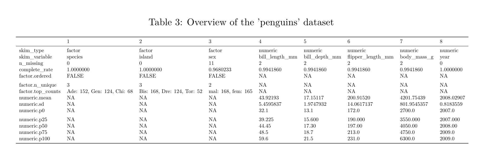

21.4 Load packages and import data
Load the following packages, including palmerpenguins and kableExtra:
library(tidyverse)
library(knitr)
library(naniar)
library(skimr)
library(palmerpenguins)
library(kableExtra)We’ll use the “circadian.csv” dataset, which is also used in the “comparing more than 2 means tutorial”. These data are associated with Example 15.1 in the text.
The circadian data describe melatonin production in 22 people randomly assigned to one of three light treatments.
circadian <- read_csv("https://raw.githubusercontent.com/ubco-biology/BIOL202/main/data/circadian.csv")##
## ── Column specification ──────────────────────────────────────────────────────────────────────────────────────────────────────────────────────
## cols(
## treatment = col_character(),
## shift = col_double()
## )21.4.1 Formatting output from the skimr package
It is always good practice to get an overview of a dataset before proceeding with analyses.
For this we have been using the skim_without_charts function from the skimr package.
You may have noticed that when you knit assignments to PDF, any output from the skim_without_charts function tends to run off the edge of the page. Here we’ll learn how to avoid this.
The key is to assign the output to an object first, as such:
skim.out <- circadian %>%
skim_without_charts()We will also “transpose” (rotate) the table using the t base function:, so that it’ll fit on a page:
skim.out.transposed <- t(skim.out)Now we’ll use the kbl function with various arguments to ensure the output looks good and includes a table caption:
NOTE: This table will look different when knitted to PDF (rather than HTML)
IMPORTANT:
Notice that, unlike figure captions, which must be provided in the chunk header, the caption for a table is provided as an argument to the kbl function within the actual code!
kbl(skim.out.transposed, caption = "Overview of the 'circadian' dataset",
booktabs = TRUE) %>%
kable_styling(latex_options = "hold_position")In the preceding code we:
- use the
kblfunction and provide 3 arguments:- provide the name of the table-like object we wish to format for output
- provide a table caption
- provide an argument “booktabs = TRUE” (this provides nice formatting)
Then we include pipes ("%>%), and follow with:
- the
kable_stylingfunction with a few arguments:- “latex_options = ‘hold_position’” which forces the table to appear where the code chunk comes
For lots of great examples of how the kableExtra package can be used, see this vignette for PDF output, and this one for HTML output.
IMPORTANT:
If you attempt to use the skim_without_charts function without wrapping the about in a kbl function, you will likely get an error when you attempt to knit to PDF.
| 1 | 2 | |
|---|---|---|
| skim_type | character | numeric |
| skim_variable | treatment | shift |
| n_missing | 0 | 0 |
| complete_rate | 1 | 1 |
| character.min | 4 | |
| character.max | 7 | |
| character.empty | 0 | |
| character.n_unique | 3 | |
| character.whitespace | 0 | |
| numeric.mean | -0.7127273 | |
| numeric.sd | 0.8901534 | |
| numeric.p0 | -2.83 | |
| numeric.p25 | -1.33 | |
| numeric.p50 | -0.66 | |
| numeric.p75 | -0.05 | |
| numeric.p100 | 0.73 |
Let’s check to see if this approach works on a larger dataset (one with more variables).
Let’s try it on the “penguins” dataset:
skim.penguins <- penguins %>%
skim_without_charts()Transpose:
skim.penguins.transposed <- t(skim.penguins)Now let’s try the kbl ouptut:
NOTE: This table will look different when knitted to PDF (rather than HTML). Specifically, it will print off page…
kbl(skim.penguins.transposed, caption = "Overview of the 'penguins' dataset",
booktabs = TRUE) %>%
kable_styling(latex_options = "hold_position")| 1 | 2 | 3 | 4 | 5 | 6 | 7 | 8 | |
|---|---|---|---|---|---|---|---|---|
| skim_type | factor | factor | factor | numeric | numeric | numeric | numeric | numeric |
| skim_variable | species | island | sex | bill_length_mm | bill_depth_mm | flipper_length_mm | body_mass_g | year |
| n_missing | 0 | 0 | 11 | 2 | 2 | 2 | 2 | 0 |
| complete_rate | 1.0000000 | 1.0000000 | 0.9680233 | 0.9941860 | 0.9941860 | 0.9941860 | 0.9941860 | 1.0000000 |
| factor.ordered | FALSE | FALSE | FALSE | |||||
| factor.n_unique | 3 | 3 | 2 | |||||
| factor.top_counts | Ade: 152, Gen: 124, Chi: 68 | Bis: 168, Dre: 124, Tor: 52 | mal: 168, fem: 165 | |||||
| numeric.mean | 43.92193 | 17.15117 | 200.91520 | 4201.75439 | 2008.02907 | |||
| numeric.sd | 5.4595837 | 1.9747932 | 14.0617137 | 801.9545357 | 0.8183559 | |||
| numeric.p0 | 32.1 | 13.1 | 172.0 | 2700.0 | 2007.0 | |||
| numeric.p25 | 39.225 | 15.600 | 190.000 | 3550.000 | 2007.000 | |||
| numeric.p50 | 44.45 | 17.30 | 197.00 | 4050.00 | 2008.00 | |||
| numeric.p75 | 48.5 | 18.7 | 213.0 | 4750.0 | 2009.0 | |||
| numeric.p100 | 59.6 | 21.5 | 231.0 | 6300.0 | 2009.0 |
Argh, our output went off the page!
If this happens, then we add another argument to the kable_styling function, the “scale_down” option:
kbl(skim.penguins.transposed, caption = "Overview of the 'penguins' dataset",
booktabs = TRUE) %>%
kable_styling(latex_options = c("scale_down", "hold_position"))| 1 | 2 | 3 | 4 | 5 | 6 | 7 | 8 | |
|---|---|---|---|---|---|---|---|---|
| skim_type | factor | factor | factor | numeric | numeric | numeric | numeric | numeric |
| skim_variable | species | island | sex | bill_length_mm | bill_depth_mm | flipper_length_mm | body_mass_g | year |
| n_missing | 0 | 0 | 11 | 2 | 2 | 2 | 2 | 0 |
| complete_rate | 1.0000000 | 1.0000000 | 0.9680233 | 0.9941860 | 0.9941860 | 0.9941860 | 0.9941860 | 1.0000000 |
| factor.ordered | FALSE | FALSE | FALSE | |||||
| factor.n_unique | 3 | 3 | 2 | |||||
| factor.top_counts | Ade: 152, Gen: 124, Chi: 68 | Bis: 168, Dre: 124, Tor: 52 | mal: 168, fem: 165 | |||||
| numeric.mean | 43.92193 | 17.15117 | 200.91520 | 4201.75439 | 2008.02907 | |||
| numeric.sd | 5.4595837 | 1.9747932 | 14.0617137 | 801.9545357 | 0.8183559 | |||
| numeric.p0 | 32.1 | 13.1 | 172.0 | 2700.0 | 2007.0 | |||
| numeric.p25 | 39.225 | 15.600 | 190.000 | 3550.000 | 2007.000 | |||
| numeric.p50 | 44.45 | 17.30 | 197.00 | 4050.00 | 2008.00 | |||
| numeric.p75 | 48.5 | 18.7 | 213.0 | 4750.0 | 2009.0 | |||
| numeric.p100 | 59.6 | 21.5 | 231.0 | 6300.0 | 2009.0 |
NOTE: On this HTML page the table above still goes off the page, but the PDF version will work!
Here’s an image of the PDF output:

For very large datasets you may find this approach causes the font to be too small.
21.4.2 A nicely formatted table of descriptive statistics
Here is the code (which you’ve already learned) to create a good table of descriptive statistics for a numeric response variable grouped by categories in a categorical explanatory variable.
We’ll use the “penguins” dataset again, and calculate descriptive statistics for bill lengths of male penguins, grouped by species:
penguins.stats <- penguins %>%
filter(sex == "male") %>%
group_by(species) %>%
summarise(
Count = n() - naniar::n_miss(bill_length_mm),
Count_NA = naniar::n_miss(bill_length_mm),
Mean = mean(bill_length_mm, na.rm = TRUE),
SD = sd(bill_length_mm, na.rm = TRUE),
SEM = SD/sqrt(Count),
Low_95_CL = t.test(bill_length_mm, conf.level = 0.95)$conf.int[1],
Up_95_CL = t.test(bill_length_mm, conf.level = 0.95)$conf.int[2]
)Here’s what the raw table looks like:
penguins.stats## # A tibble: 3 × 8
## species Count Count_NA Mean SD SEM Low_95_CL Up_95_CL
## <fct> <int> <int> <dbl> <dbl> <dbl> <dbl> <dbl>
## 1 Adelie 73 0 40.39 2.277 0.2665 39.86 40.92
## 2 Chinstrap 34 0 51.09 1.565 0.2683 50.55 51.64
## 3 Gentoo 61 0 49.47 2.721 0.3483 48.78 50.17Now let’s format it for PDF output:
kbl(penguins.stats, caption = "Descriptive statistics for bill length among male penguins.",
booktabs = TRUE, digits = c(0, 0, 0, 2, 3, 3, 3, 3)) %>%
kable_styling(latex_options = c("scale_down", "hold_position"), position = "center")| species | Count | Count_NA | Mean | SD | SEM | Low_95_CL | Up_95_CL |
|---|---|---|---|---|---|---|---|
| Adelie | 73 | 0 | 40.39 | 2.277 | 0.267 | 39.859 | 40.922 |
| Chinstrap | 34 | 0 | 51.09 | 1.565 | 0.268 | 50.548 | 51.640 |
| Gentoo | 61 | 0 | 49.47 | 2.721 | 0.348 | 48.777 | 50.171 |
The key difference from the previous example done with the skim_without_charts output is that here we specify the number of decimal places we want each descriptive statistic to be reported to.
Specifically, the “digits” argument accepts a vector of numbers, whose length is equal to the number of columns being reported in the table, and these numbers indicate the number of decimal places to include for that specific variable.
At this point it would be a good idea to revisit the Biology department’s guidelines for reporting descriptive statistics.
For example, we can see that the first three numbers in the “digits” argument are zeroes, and these correspond to the first three columns of the table: “species,” “Count,” “Count_NA.” These are columns whose values don’t require decimal places.
For the “Mean” column we report the values to 1 more decimal place than was used in the measurement (which you find out by looking at the raw data in the “penguins” object), so here, 2 decimal places.
For measures of spread (like the standard deviation) and measures of uncertainty (including SEM and confidence limits), report the numbers to 2 more decimal places than was used in the measurement, so here, 3 decimal places.
You now know how to produce nicely formatted tables in your knitted PDF output!
IMPORTANT:
Be sure to try knitting to PDF as soon as you’ve used any of the kable or kableExtra package functions in a code chunk, as this will help you trouble-shoot if you encounter problems.